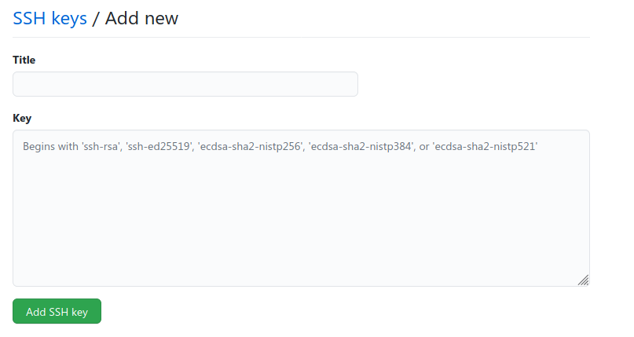

Introdução¶
Essa documentação tem como objetivo demonstrar os processos básicos necessários para o desenvolvimento dos softwares envolvidos na construção do sistema supervisório do Cheetah E-Racing. Os procedimentos serão organizados em dois sistemas: o backend (código que roda no servidor) e o frontend (código que roda nos computadores clientes:
Git¶
O primeiro passo para trabalhar no sistema supervisório é obter o código. É possível baixar como um .zip no github da equipe, porém isso torna difícil o controle de versionamento e a organização entre os membros. Assim, a melhor maneira é instalar o git no PC e fazer um clone do seu fork do repositório.
Instalando o git¶
Linux¶
O jeito mais rápido de instalar o git é utilizando o gerenciador de pacotes da sua distribuição. Em sistemas baseados em debian (Ubuntu/Pop OS/Mint/Raspberry PI OS), basta executar como superusuário:
1 | sudo apt update && sudo apt install git
|
Windows¶
Para instalar o git no Windows, siga as instruções no site oficial: https://git-scm.com/
Criando um fork¶
Após criar uma conta no github, acesse a página do supervisório do cheetah: https://github.com/TelemetriaCheetah/Supervisorio Em seguida, basta clicar no botão de fork

Nota
O fork é uma cópia do repositório vinculada à sua conta de usuário, e é nele que as modificações devem ser feitas. Alterar o código utilizando a conta do cheetah diretamente é uma prática que deve ser evitada ao máximo, pois impossibilita o controle do responsável por cada modificação.
Criando chaves SSH¶
Para enviar seu código ao github, é necessário se autenticar no site. A autenticação por usuário/senha está sendo desativada aos poucos, e deixará de funcionar em breve (Se você está lendo isto no futuro, é provável que já tenha sido desativada). Portanto, é necessário utilizar outro método de autenticação, e uma maneira simples de fazer isso é adicionando chaves SSH à sua conta do github. Para gerar um par de chaves pública/privada, abra o terminal / powershell e execute o comando:
1 | ssh-keygen
|
O par de chaves gerado é salvo por padrão na sua pasta de usuário dentro de .ssh . Dentro da pasta, abra o arquivo de chave pública (o que termina com .pub) e copie seu conteúdo. Em seguida, vá até a sua página do github e siga os passos:
Nota
Caso a pasta esteja oculta, vocẽ deve habilitar a opção de visualizar arquivos ocultos no seu gerenciador de arquivos.
Abra as configurações da conta

Vá até a opção de chaves SSH e GPG

Clique em adicionar nova chave SSH

Dê um título de sua preferência e cole a chave pública copiada no campo key
Clonando o repositório¶
Para criar uma cópia local do seu repositório, copie o link no botão «code», lembrando que é necessário selecionar a opção «SSH»:

Em seguida, abra o terminal / git shell (o git shell pode ser aberto clicando com o botão direito do mouse em um espaço branco dentro de uma pasta qualquer do Windows) e execute o comando:
1 | git clone <cole o link que você copiou aqui>
|
Git Commit¶
Após realizar as alterações no código local, é necessário enviá-las ao repositório remoto (github). Para isso, abra o terminal / git shell dentro da pasta clonada e execute os comandos:
1 2 3 | git add -A
git commit -m "Escreva aqui uma mensagem breve explicando as alterações realizadas desde o último commit"
git push origin main
|
Caso queira ver quais alterações fazem parte ou não do commit, use o comando
1 | git status
|
Atualizando o repositório¶
Para garantir que você está trabalhando na versão mais recente do código, é necessário sincronizar o seu fork com o repositório original (comumente chamado de upstream). Para isso, adicione o repositório original no seu git:
1 2 | git remote add upstream <link para repositório do cheetah>
git fetch upstream
|
Feito isso, você deve executar o comando abaixo toda vez que alguma alteração for realizada por outra pessoa no repositório do Cheetah:
1 | git pull upstream main
|
Criando um pull request¶
Finalmente, para submeter suas alterações para o repositório upstream, basta criar um pull request clicando em «pull requests» e em seguida «criar novo pull request». O request deve ser aprovado pelo mantenedor do repositório oficial do Cheetah.
Instalando o node¶
A tecnologia principal utilizada para o backend do sistema supervisório é o node.js:
Linux¶
Em sistemas baseados em debian (Ubuntu/Pop OS/Mint/Raspberry PI OS), basta executar como superusuário: sudo apt update && sudo apt install nodejs
Windows¶
Para instalar o node no Windows, siga as instruções no site oficial: https://nodejs.org/en/download/
Instalando o MySQL¶
Linux¶
Em sistemas baseados em debian (Ubuntu/Pop OS/Mint/Raspberry PI OS), basta executar como superusuário:
sudo apt update && sudo apt install apache2 mariadb-server phpmyadmin
Windows¶
No Windows, é possível baixar pacotes que incluem todas as ferramentas necessárias para rodar um servidor apache com MySQL/MariaDB e php em um único executável. Um exemplo recomendado é o WAMP (Windows Apache MySQL PHP) server, que pode ser baixado no link: https://www.wampserver.com/en/
Tutoriais de programação¶
O sistema supervisório é escrito utilizando javascript para o frontend e backend, portanto javascript é a linguagem que deve ser o foco dos estudos. Para a formatação do site são utilizados HTML5 e CSS, e portanto é necessário possuir conhecimento dessas linguagens também. Além disso, os dados coletados são armazenados em um banco de dados MySQL, e familiaridade com queries SQL é bastante útil. Seguem abaixo alguns links relevantes sobre os assuntos:
- https://www.urionlinejudge.com.br URI Online Judge - para treinar algoritmos e básico de programação
- https://developer.mozilla.org/pt-BR/docs/Learn/Getting_started_with_the_web/JavaScript_basics JavaScript básico - documentação da Mozilla
- https://www.youtube.com/watch?v=vrSEt5J4q2Y&list=PLbA-jMwv0cuWbas947cygrzfzHIc7esmp Curso javascript básico - youtube
- https://www.youtube.com/watch?v=CjQMi8mv2Do Introdução ao node.js - youtube
- https://www.youtube.com/watch?v=BhJu05tUo-M Introdução ao MySQL - youtube
- https://www.youtube.com/watch?v=Em0R3csNMVE&list=PLhkO7OMKgT_p3VoB47VHdLGpYTzxYTv8R Introdução HTML5 e CSS - youtube